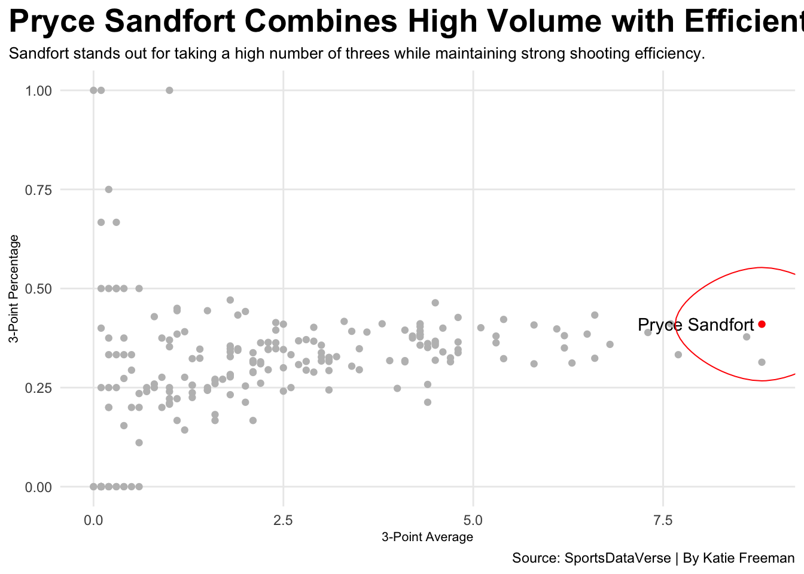
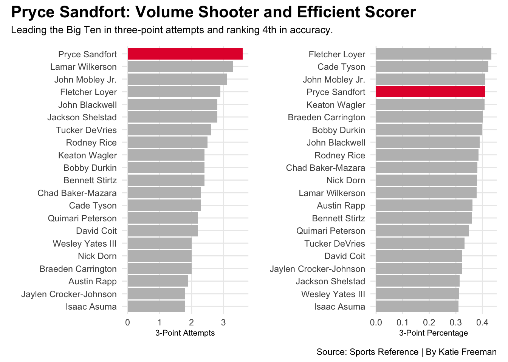

Code
library(tidyverse)library(tidyverse)Examining the Three-Point Efficiency of the Husker Forward Among Others Big Ten.
bigten <- read_csv("data/bigten.csv")Rows: 241 Columns: 31
── Column specification ────────────────────────────────────────────────────────
Delimiter: ","
chr (5): Player, Team, Pos, Awards, Player-additional
dbl (26): Rk, G, GS, MP, FG, FGA, FG%, 3P, 3PA, 3P%, 2P, 2PA, 2P%, eFG%, FT,...
ℹ Use `spec()` to retrieve the full column specification for this data.
ℹ Specify the column types or set `show_col_types = FALSE` to quiet this message.Here’s more of my story. When examining all Big Ten players who average at least 5 threes per game, we can filter the top players.
Plot #1
nu <- bigten |>
filter(Team == "Nebraska")nu5 <- bigten |>
filter(`3PA` >= 5, Team == "Nebraska")shooters <- bigten |>
filter(`3PA` >= 5)ggplot() +
geom_bar(data=shooters, aes(x=reorder(Player, `3PA`), weight=`3PA`), fill="grey") +
geom_bar(data=nu5, aes(x=reorder(Player, `3PA`), weight=`3PA`), fill="#e41c38") +
coord_flip() +
labs(
x="Player",
y="3-Point Attempts",
title="Pryce Sandfort Ties Jackson Shelstad for Big Ten Lead in 3-Point Attempts Per Game",
subtitle="Among players averaging at least 5 threes per game, Sandfort is at the top of the conference.",
caption="Source: Sports Reference | By Katie Freeman"
) +
theme_minimal() +
theme(
plot.title = element_text(size = 20, face = "bold"),
axis.title = element_text(size = 10),
plot.subtitle = element_text(size=12),
panel.grid.minor = element_blank(),
plot.title.position = "plot"
) Plot #2
library(tidyverse)
library(ggrepel)bigten <- read_csv("data/bigten.csv")Rows: 241 Columns: 31
── Column specification ────────────────────────────────────────────────────────
Delimiter: ","
chr (5): Player, Team, Pos, Awards, Player-additional
dbl (26): Rk, G, GS, MP, FG, FGA, FG%, 3P, 3PA, 3P%, 2P, 2PA, 2P%, eFG%, FT,...
ℹ Use `spec()` to retrieve the full column specification for this data.
ℹ Specify the column types or set `show_col_types = FALSE` to quiet this message.shooters <- bigten |>
filter(`3PA` >= 5)nu5 <- bigten |>
filter(`3PA` >= 5, Team == "Nebraska")ggplot() + geom_point(data=bigten, aes(x=`3P`, y=`3P%`))Warning: Removed 28 rows containing missing values or values outside the scale range
(`geom_point()`).
ggplot() +
geom_point(
data=bigten,
aes(x=`3P`, y=`3P%`, size=`3P`)
)Warning: Removed 28 rows containing missing values or values outside the scale range
(`geom_point()`).
ggplot() +
geom_point(
data=bigten,
aes(x=`3P`, y=`3P%`, size=`3P`),
alpha = .3) +
scale_size(range = c(3,8), name="Wins")Warning: Removed 28 rows containing missing values or values outside the scale range
(`geom_point()`).
ggplot() +
geom_point(
data=bigten,
aes(x=`3P`, y=`3P%`, size=`3P`),
color="grey",
alpha = .3) +
geom_point(
data=nu5,
aes(x=`3P`, y=`3P%`, size=`3P`),
color="#e41c38"
) +
scale_size(range = c(1,10), name="3 Pointers Made") +
geom_text_repel(
data=bigten,
aes(x=`3P`, y=`3P%`, label=Player)
) +
labs(
x="3-Point Attempts",
y="3-Point Percentage",
title="Pryce Sandfort Combines High Volume with Efficient Three-Point Shooting",
subtitle="Sandfort stands out for taking a high number of threes while maintaining strong shooting efficiency.",
caption="Source: Sports Reference | By Katie Freeman"
) +
theme_minimal() +
theme(
plot.title = element_text(size = 20, face = "bold"),
axis.title = element_text(size = 10),
plot.subtitle = element_text(size=12),
panel.grid.minor = element_blank(),
plot.title.position = "plot")
Plot #3
library(tidyverse)
library(ggrepel)
library(ggalt)PS <- nu |>
filter(Player == "Pryce Sandfort")ggplot() +
geom_point(data=bigten, aes(x=`3PA`, y=`3P%`), color="grey") +
geom_point(data=PS, aes(x=`3PA`, y=`3P%`), color="red") +
geom_text_repel(data=PS, aes(x=`3PA`, y=`3P%`, label=Player)) +
geom_encircle(data=PS, aes(x=`3PA`, y=`3P%`), s_shape=.03, expand=.03, color="red") +
labs(
x="3-Point Average",
y="3-Point Percentage",
title="Pryce Sandfort Combines High Volume with Efficient Three-Point Shooting",
subtitle="Sandfort stands out for taking a high number of threes while maintaining strong shooting efficiency.",
caption="Source: SportsDataVerse | By Katie Freeman"
) +
theme_minimal() +
theme(
plot.title = element_text(size = 20, face = "bold"),
axis.title = element_text(size = 8),
plot.subtitle = element_text(size=10),
panel.grid.minor = element_blank(),
plot.title.position = "plot"
) 
bar1 <- ggplot() +
geom_bar(data=shooters, aes(x=reorder(Player, `3P%`), weight=`3P%`), fill="grey") +
geom_bar(data=nu5, aes(x=reorder(Player, `3P%`), weight=`3P%`), fill="#e41c38") +
coord_flip() +
labs(
x="",
y="3-Point Percentage"
) +
theme_minimal()
bar2 <- ggplot() +
geom_bar(data=shooters, aes(x=reorder(Player, `3P`), weight=`3P`), fill="grey") +
geom_bar(data=nu5, aes(x=reorder(Player, `3P`), weight=`3P`), fill="#e41c38") +
coord_flip() +
labs(
x="",
y="3-Point Attempts"
) +
theme_minimal() Plot #4
library(patchwork)bar2 + bar1 +
plot_annotation(
title = "Pryce Sandfort: Volume Shooter and Efficient Scorer",
subtitle = "Leading the Big Ten in three-point attempts and ranking 4th in accuracy.",
caption="Source: Sports Reference | By Katie Freeman"
) &
theme(
plot.title = element_text(size = 16, face = "bold"),
axis.title = element_text(size = 8),
plot.subtitle = element_text(size=10),
panel.grid.minor = element_blank()
)